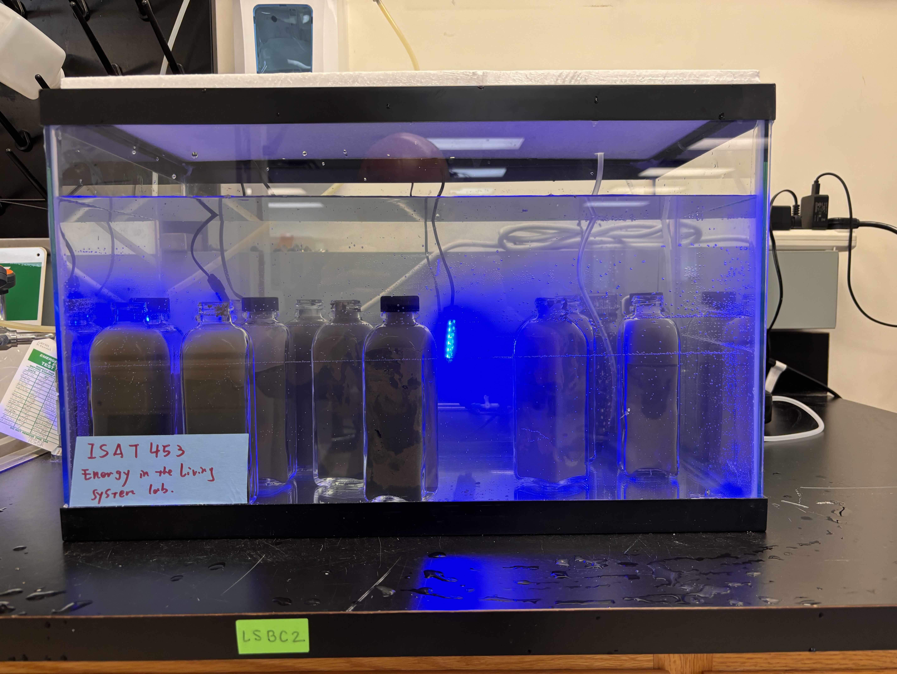
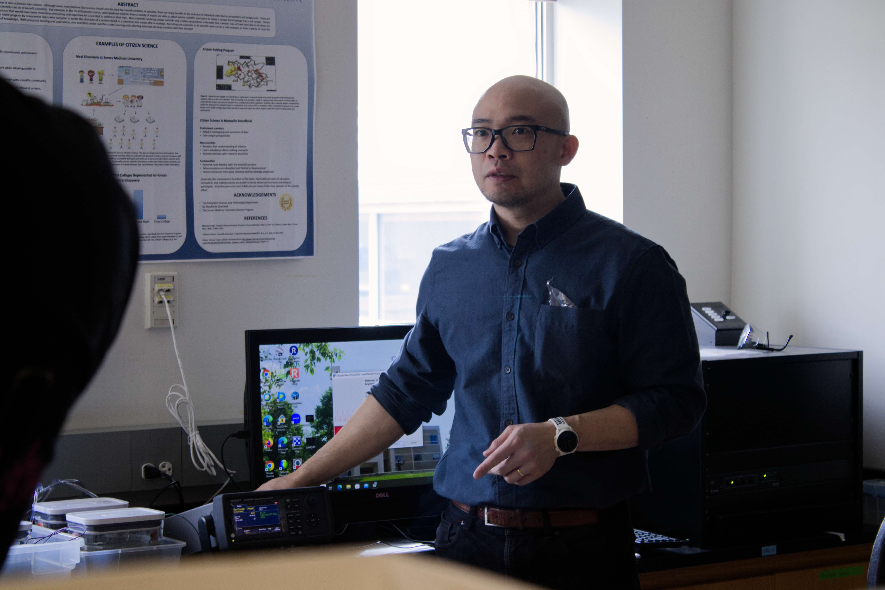
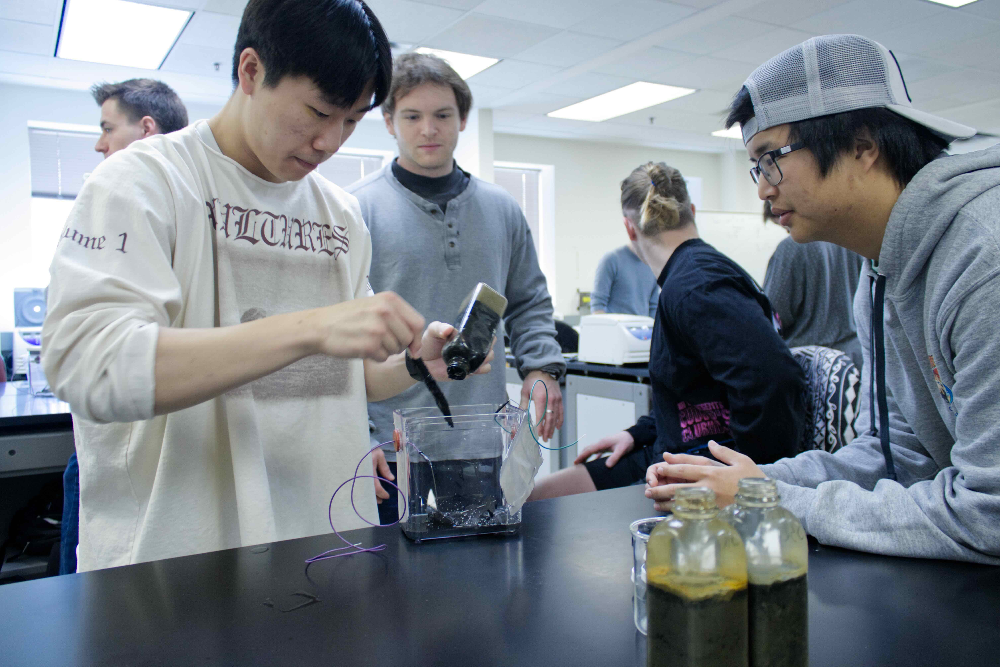
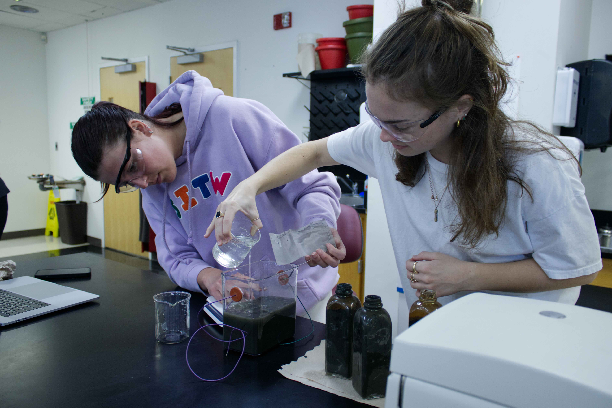
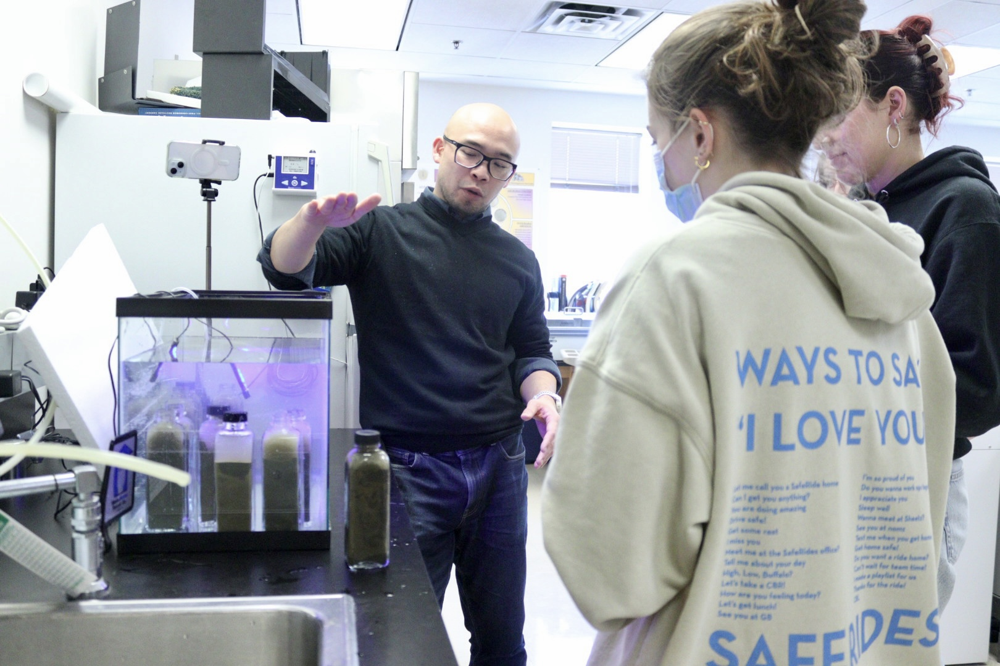
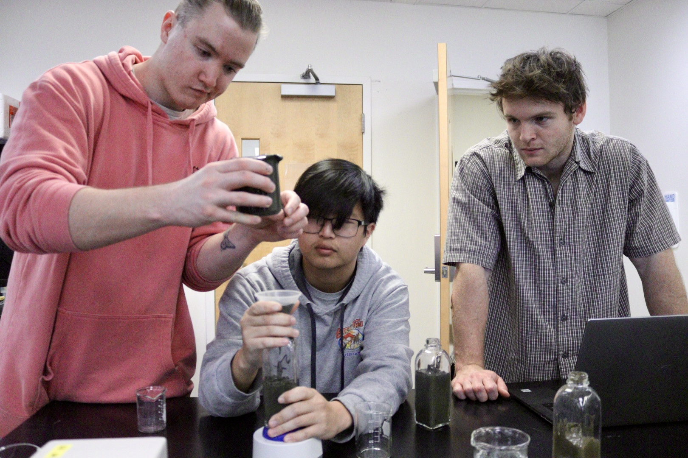

Teaching Philosophy
My teaching philosophy centers on creating an inclusive, student-driven learning environment where curiosity and practical engagement are paramount. I emphasize connecting theoretical knowledge to real-world applications in environmental engineering and bioelectrochemical systems, encouraging students to explore complex ideas through hands-on projects, interdisciplinary collaboration, and problem-solving exercises.
Continuous improvement through student feedback is key to my approach, aiming to meet diverse learning needs while nurturing a supportive classroom. Above all, I view my role as facilitating growth in students' skills, confidence, and teamwork, preparing them to become adaptable, resilient engineers and scientists.
Courses
James Madison University — Assistant Professor
- Applied Statistics in Integrated Science and Technology (Fall 2024, Spring 2025)
- Biotechnology Issues in Science and Technology (Fall 2023)
- Biotechnology Issues in Science and Technology Lab (Fall 2023, Fall 2024)
- Energy in the Living System (Spring 2024)
Oregon State University — Instructor
- Microbial Processes for Ecological Engineering (Spring 2023)
- Bioremediation Engineering (Winter 2021–Winter 2023)
Classroom Moments





